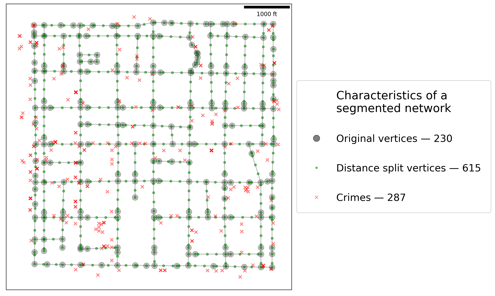

This page was generated from notebooks/network-segmentation.ipynb.
Interactive online version:

If any part of this notebook is used in your research, please cite with the reference found in README.md.
Spatial network segmentation¶
Demonstrating network segmentation¶
Author: James D. Gaboardi jgaboardi@gmail.com
This notebook is an advanced walk-through for:
Demonstrating network segmentation
Understanding observation counts per network arc
Visualizing network representations with emprical and synthetic data
[1]:
%config InlineBackend.figure_format = "retina"
[2]:
%load_ext watermark
%watermark
Last updated: 2022-11-01T23:12:43.969585-04:00
Python implementation: CPython
Python version : 3.10.6
IPython version : 8.6.0
Compiler : Clang 13.0.1
OS : Darwin
Release : 22.1.0
Machine : x86_64
Processor : i386
CPU cores : 8
Architecture: 64bit
[3]:
import libpysal
import matplotlib
import matplotlib_scalebar
from matplotlib_scalebar.scalebar import ScaleBar
from mpl_toolkits.axes_grid1 import make_axes_locatable
import numpy
import spaghetti
%matplotlib inline
%watermark -w
%watermark -iv
Watermark: 2.3.1
numpy : 1.23.4
matplotlib_scalebar: 0.8.0
libpysal : 4.6.2
json : 2.0.9
matplotlib : 3.6.1
spaghetti : 1.6.8
/Users/the-gaboardi/miniconda3/envs/py310_spgh_dev/lib/python3.10/site-packages/spaghetti/network.py:39: FutureWarning: The next major release of pysal/spaghetti (2.0.0) will drop support for all ``libpysal.cg`` geometries. This change is a first step in refactoring ``spaghetti`` that is expected to result in dramatically reduced runtimes for network instantiation and operations. Users currently requiring network and point pattern input as ``libpysal.cg`` geometries should prepare for this simply by converting to ``shapely`` geometries.
warnings.warn(f"{dep_msg}", FutureWarning)
Instantiating a spaghetti.Network object and a point pattern¶
Instantiate the network from a .shp file¶
[4]:
ntw = spaghetti.Network(in_data=libpysal.examples.get_path("streets.shp"))
Associate the network with a point pattern¶
[5]:
pp_name = "crimes"
pp_shp = libpysal.examples.get_path("%s.shp" % pp_name)
ntw.snapobservations(pp_shp, pp_name, attribute=True)
ntw.pointpatterns
[5]:
{'crimes': <spaghetti.network.PointPattern at 0x104201c60>}
1. Network segmentation¶
Split network arcs into segments of 200 distance units (US feet is this case)¶
[6]:
n200 = ntw.split_arcs(200.0)
n200
[6]:
<spaghetti.network.Network at 0x15a9d0490>
The returned object inherits many of the attributes from the original network¶
[7]:
print(dir(n200))
['GlobalAutoK', 'Moran', '__class__', '__delattr__', '__dict__', '__dir__', '__doc__', '__eq__', '__format__', '__ge__', '__getattribute__', '__gt__', '__hash__', '__init__', '__init_subclass__', '__le__', '__lt__', '__module__', '__ne__', '__new__', '__reduce__', '__reduce_ex__', '__repr__', '__setattr__', '__sizeof__', '__str__', '__subclasshook__', '__weakref__', '_evaluate_napts', '_extractnetwork', '_newpoint_coords', '_round_sig', '_snap_to_link', '_yield_napts', '_yieldneighbor', 'adjacencylist', 'allneighbordistances', 'arc_lengths', 'arcs', 'compute_distance_to_vertices', 'compute_snap_dist', 'contiguityweights', 'count_per_link', 'distancebandweights', 'enum_links_vertex', 'extractgraph', 'full_distance_matrix', 'identify_components', 'in_data', 'loadnetwork', 'nearestneighbordistances', 'network_component2arc', 'network_component_is_ring', 'network_component_labels', 'network_component_lengths', 'network_component_vertex_count', 'network_component_vertices', 'network_fully_connected', 'network_largest_component', 'network_longest_component', 'network_n_components', 'pointpatterns', 'savenetwork', 'shortest_paths', 'simulate_observations', 'snapobservations', 'split_arcs', 'vertex_coords', 'vertex_list', 'vertices', 'w_network']
[8]:
n200.pointpatterns
[8]:
{'crimes': <spaghetti.network.PointPattern at 0x15a9d06a0>}
Extract the elements from both the original network and the split network¶
[9]:
# 'full' unsegmented network
vtx_df, arc_df = spaghetti.element_as_gdf(ntw, vertices=True, arcs=True)
# network segmented at 200-foot increments
vtx200_df, arc200_df = spaghetti.element_as_gdf(n200, vertices=True, arcs=True)
# crimes point pattern
pp_df = spaghetti.element_as_gdf(ntw, pp_name=pp_name)
Plotter function¶
[10]:
def plotter(split_ntw, vtx_label):
"""Generate a spatial plot."""
def _patch(_kws, labinfo):
"""Generate a legend patch."""
label = "%s — %s" % tuple(labinfo)
_kws.update({"lw":0, "label":label, "alpha":.5})
return matplotlib.lines.Line2D([], [], **_kws)
def _legend(handles, anchor=(1., .75)):
"""Generate a legend."""
lkws = {"fancybox":True,"framealpha":0.85, "fontsize":"xx-large"}
lkws.update({"bbox_to_anchor": anchor, "labelspacing": 2.})
lkws.update({"borderpad": 1., "handletextpad":1.})
lkws.update({"title": "Characteristics of a\nsegmented network", "title_fontsize":20})
matplotlib.pyplot.legend(handles=handles, **lkws)
base = arc_df.plot(color="k", figsize=(9, 9), alpha=.25, zorder=0)
patches = []
gdfs, alphas = [vtx_df, split_ntw, pp_df], [.25, .5, .5]
colors, zo = ["k", "g", "r"], [1 ,2 ,3]
markers, markersizes = ["o", "o", "x"], [100, 15, 30]
labels = [["Original vertices"], [f"{vtx_label} split vertices"], ["Crimes"]]
iterinfo = list(zip(gdfs, colors, zo, markers, markersizes, labels, alphas))
for gdf, c, z, m, ms, lab, a in iterinfo:
gdf.plot(ax=base, c=c, marker=m, markersize=ms, zorder=z, alpha=a)
ms = ms/5. if z != 1 else ms/9.
patch_args = {"marker":m, "markersize":ms,"c":c}, lab+[gdf.shape[0]]
patches.append(_patch(*patch_args))
_legend(patches)
carto_elements(base)
def carto_elements(b):
"""Add/adjust cartographic elements."""
kw = {"units":"ft", "dimension":"imperial-length", "fixed_value":1000}
b.add_artist(ScaleBar(1, box_alpha=.75, **kw))
b.set(xticklabels=[], xticks=[], yticklabels=[], yticks=[]);
[11]:
plotter(vtx200_df, "Distance")

As is shown above, performing (relatively) uniform segmentation results in a more granulated network.
Network arcs can also be split by a specified number of divisions.¶
[12]:
n2 = ntw.split_arcs(2, split_by="count")
[13]:
# network segmented by halving arcs
vtx2_df, arc2_df = spaghetti.element_as_gdf(n2, vertices=True, arcs=True)
plotter(vtx2_df, "Count")
2. Counts per link¶
Counts per link may vary considerably depending on the granularity of the network.¶
[14]:
def fetch_cpl(net, pp, mean=True):
"""Create a counts per link object and find mean."""
cpl = net.count_per_link(net.pointpatterns[pp].obs_to_arc, graph=False)
if mean:
mean_cpl = sum(list(cpl.values())) / float(len(cpl.keys()))
return cpl, mean_cpl
return cpl
[15]:
ntw_counts, ntw_ctmean = fetch_cpl(ntw, pp_name)
ntw_ctmean
[15]:
2.682242990654206
[16]:
n200_counts, n200_ctmean = fetch_cpl(n200, pp_name)
n200_ctmean
[16]:
2.05
[17]:
def counts_col(cts, df, join, col, transform="log10"):
"""Create a counts per link dataframe column and transform."""
df[col] = df[join].map(cts).fillna(0.)
if transform:
t = getattr(numpy, "log10")
df["%s_%s"%(col, transform)] = df[col].apply(lambda x:
0.0 if x == 0. else (.2 if x == 1. else t(x))
)
return df
Original network¶
[18]:
arc_df = counts_col(ntw_counts, arc_df, "id", "n_crimes")
arc_df.head()
[18]:
| id | geometry | comp_label | n_crimes | n_crimes_log10 | |
|---|---|---|---|---|---|
| 0 | (0, 1) | LINESTRING (728368.048 877125.895, 728368.139 ... | 0 | 0.0 | 0.000000 |
| 1 | (0, 2) | LINESTRING (728368.048 877125.895, 728367.458 ... | 0 | 1.0 | 0.200000 |
| 2 | (1, 110) | LINESTRING (728368.139 877023.272, 728612.255 ... | 0 | 0.0 | 0.000000 |
| 3 | (1, 127) | LINESTRING (728368.139 877023.272, 727708.140 ... | 0 | 3.0 | 0.477121 |
| 4 | (1, 213) | LINESTRING (728368.139 877023.272, 728368.729 ... | 0 | 0.0 | 0.000000 |
200-meter segmented network¶
[19]:
arc200_df = counts_col(n200_counts, arc200_df, "id", "n_crimes")
arc200_df.head()
[19]:
| id | geometry | comp_label | n_crimes | n_crimes_log10 | |
|---|---|---|---|---|---|
| 0 | (0, 1) | LINESTRING (728368.048 877125.895, 728368.139 ... | 0 | 0.0 | 0.0 |
| 1 | (0, 230) | LINESTRING (728368.048 877125.895, 728367.869 ... | 0 | 0.0 | 0.0 |
| 2 | (1, 233) | LINESTRING (728368.139 877023.272, 728568.139 ... | 0 | 0.0 | 0.0 |
| 3 | (1, 234) | LINESTRING (728368.139 877023.272, 728168.139 ... | 0 | 1.0 | 0.2 |
| 4 | (1, 237) | LINESTRING (728368.139 877023.272, 728368.318 ... | 0 | 0.0 | 0.0 |
3. Visualizing differences for comparison¶
Frequently it is acceptable to transform raw counts in order to better visualize the data.
[20]:
def truncated_cmap(cm, vmin, vmax, steps):
"""Truncate a matplotlib colormap object"""
lspace = numpy.linspace(vmin, vmax, steps)
args = "trunc(%s,%.2f,%.2f)" % (cm.name, vmin, vmax), cm(lspace)
tcmap = matplotlib.colors.LinearSegmentedColormap.from_list(*args)
return tcmap
in_cmap = matplotlib.pyplot.get_cmap("inferno")
out_cmap = truncated_cmap(in_cmap, 0.2, 0.8, 100)
[21]:
def sidexside_plot(df1, df2, col, cmap, supt, subt1, subt2, figsize=(12, 12)):
"""Create a side-by-side plot."""
# set figure & subplot args
sub_args = {"gridspec_kw":{"width_ratios": [1, .86]}, "figsize":figsize}
fig, arr = matplotlib.pyplot.subplots(1, 2, **sub_args)
# set plotting args and plot
arc_args = {"column":col, "cmap":cmap, "lw":6, "alpha":.9, "legend":True}
for ar, df, t in zip([0,1], (df1, df2), (subt1, subt2)):
if ar == 1:
arc_args["legend"], cax = False, None
else:
divider = make_axes_locatable(arr[ar])
cax = divider.append_axes("right", size="10%", pad=0.3)
df.plot(ax=arr[ar], cax=cax, **arc_args)
arr[ar].set_title(t, fontsize=20)
carto_elements(arr[ar])
fig.suptitle(supt, y=0.8, fontsize=25)
fig.tight_layout()
Empirical data — Raw counts¶
[22]:
suptitle = "Crimes associated with network arcs — raw count"
subtitle1 = "Original ($n=%s$)" % arc_df.shape[0]
subtitle2 = "200-foot split ($n=%s$)" % arc200_df.shape[0]
title_args = (suptitle, subtitle1, subtitle2)
sidexside_plot(arc_df, arc200_df, "n_crimes", out_cmap, *title_args)
Empirical data — Transformed counts (log10)¶
[23]:
suptitle = "Crimes associated with network arcs — log10 transformed"
subtitle1 = "Original ($n=%s$)" % arc_df.shape[0]
subtitle2 = "200-foot split ($n=%s$)" % arc200_df.shape[0]
title_args = (suptitle, subtitle1, subtitle2)
sidexside_plot(arc_df, arc200_df, "n_crimes_log10", out_cmap, *title_args)
Large synthetic clusters¶
[24]:
ncrimes, cluster_crimes = 400, []; numpy.random.seed(0)
minx, miny, maxx, maxy = [725400, 877400, 727100, 879100]
for c in range(ncrimes):
for pm in [1000, -2000]:
x = numpy.random.uniform(minx+pm, maxx+pm)
y = numpy.random.uniform(miny+pm, maxy+pm)
cluster_crimes.append(libpysal.cg.Point((x,y)))
[25]:
pp_name = "crimes"
ntw.snapobservations(cluster_crimes, pp_name, attribute=True)
pp_df = spaghetti.element_as_gdf(ntw, pp_name=pp_name)
[26]:
ntw_counts, ntw_ctmean = fetch_cpl(ntw, pp_name)
n200 = ntw.split_arcs(200.0)
n200_counts, n200_ctmean = fetch_cpl(n200, pp_name)
[27]:
vtx_df, arc_df = spaghetti.element_as_gdf(ntw, vertices=True, arcs=True)
vtx200_df, arc200_df = spaghetti.element_as_gdf(n200, vertices=True, arcs=True)
[28]:
arc_df = counts_col(ntw_counts, arc_df, "id", "n_crimes")
arc200_df = counts_col(n200_counts, arc200_df, "id", "n_crimes")
[29]:
plotter(vtx200_df, "Distance")
Large synthetic clusters — Raw counts¶
[30]:
suptitle = "Crimes associated with network arcs — raw count"
subtitle1 = "Original ($n=%s$)" % arc_df.shape[0]
subtitle2 = "200-foot split ($n=%s$)" % arc200_df.shape[0]
title_args = (suptitle, subtitle1, subtitle2)
sidexside_plot(arc_df, arc200_df, "n_crimes", out_cmap, *title_args)
Large synthetic clusters — Transformed counts (log10)¶
[31]:
suptitle = "Crimes associated with network arcs — log10 transformed"
subtitle1 = "Original ($n=%s$)" % arc_df.shape[0]
subtitle2 = "200-foot split ($n=%s$)" % arc200_df.shape[0]
title_args = (suptitle, subtitle1, subtitle2)
sidexside_plot(arc_df, arc200_df, "n_crimes_log10", out_cmap, *title_args)